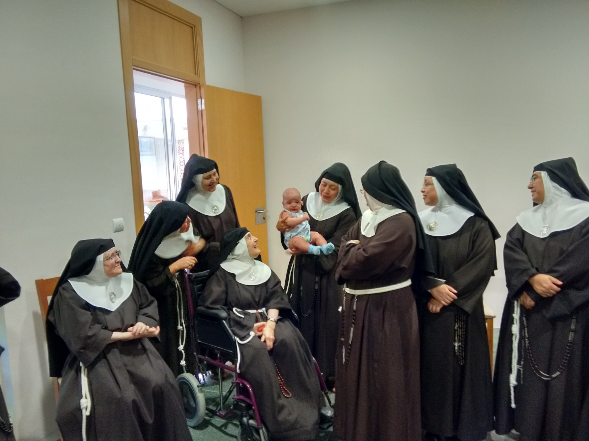

La fundación y San Damián
Con el corazón firme en la llamada de Dios, nuestra madre Santa Clara de Asís decidió abandonar todo para seguir a Cristo en pobreza y sencillez. La noche del Domingo de Ramos del año 1212, huyó en secreto de la casa paterna, dejando atrás su noble linaje y comodidades. San Francisco la esperaba en la Porciúncula, la pequeña capilla que él mismo había restaurado y que se había convertido en el corazón de la naciente Orden de los Hermanos Menores. Allí, en un gesto profundamente simbólico, Francisco le cortó el cabello, signo de su consagración total y de su renuncia al mundo.
Durante algunos días, Clara fue acogida en diversos monasterios para protegerla de la oposición de su familia. Finalmente, fue llevada por Francisco a la iglesia de San Damián, otro lugar restaurado por él mismo tras escuchar la voz de Cristo crucificado: “Francisco, repara mi casa, que como ves, está en ruinas.” En San Damián, Clara estableció la primera comunidad femenina franciscana. Allí vivió en estricta pobreza, oración y sororidad, y poco a poco otras mujeres se le unieron, atraídas por su ejemplo: su hermana Inés, su madre Ortolana, y muchas más. Así nació la Orden de las Damas Pobres, luego conocidas como las Clarisas, fieles al carisma franciscano de vivir el Evangelio con radicalidad y humildad.

La Regla de Santa Clara
Al inicio de la vida comunitaria en San Damián, Santa Clara y sus primeras hermanas vivieron según una forma de vida sencilla escrita por San Francisco, conocida como la Formula Vitae. Este texto breve reflejaba el espíritu evangélico que Francisco ya vivía con sus hermanos: pobreza, humildad y fraternidad. Sin embargo, con el paso del tiempo, y a medida que la comunidad crecía y maduraba, Clara sintió la necesidad de plasmar por escrito su propia visión, inspirada plenamente en el carisma franciscano, pero adaptada a la vida contemplativa y femenina.
Después de años de fidelidad y lucha interior y exterior para defender el ideal que profesaba, Clara redactó su propia **Regla**, convirtiéndose así en la **primera mujer en la historia de la Iglesia en escribir una regla monástica aprobada oficialmente** por el Papa. Esta regla fue solemnemente confirmada por el Papa Inocencio IV el 9 de agosto de 1253, tan solo dos días antes de su muerte, en lo que muchos consideran una señal de la providencia divina y la coronación de su fidelidad.
Un punto central e innegociable de su Regla fue la defensa del llamado **Privilegio de la Pobreza**: el derecho de su comunidad a vivir sin posesiones ni rentas, en absoluta dependencia de la providencia de Dios. Frente a las presiones de la época, que buscaban asegurar a los monasterios propiedades para su sustento, Clara sostuvo con valentía que su comunidad no tendría bienes propios ni rentas fijas. Esta renuncia radical fue una revolución en el contexto monástico del siglo XIII, y un testimonio profético que aún hoy desafía y conmueve.
La Regla de Santa Clara no solo expresa normas de vida, sino también una profunda espiritualidad centrada en Cristo pobre y crucificado, en la fraternidad y en la alegría que nace de vivir con sencillez y amor fraterno. En ella se percibe la huella de una mujer profundamente libre, enamorada del Evangelio, y plenamente identificada con la misión iniciada por San Francisco.

Santas Clarisas
- Santa Inés de Praga: princesa bohemia que dejó el lujo por seguir a Cristo. Fundó el primer monasterio fuera de italia. Clara la llamó su “hermana del alma”.
- Santa Coleta de Corbie: con una vida centrada en la Pasión de Cristo devolvió a la Orden su fuego original con su vida de penitencia.
- Santa Catalina de Bolonia: artista (pintora) y mística, su amor a Cristo, le hacía verlo en toda la creación.
- Santa Verónica Giuliani: marcada por los estigmas, amó a Jesús con pasión total.
- Beata María Ángeles de San José: clarisa española del siglo XX, mártir en 1936 durante la persecución religiosa.

El hábito franciscano
Las clarisas visten como lo hizo Clara: túnica sencilla de lana, cinturón de cuerda con tres nudos (pobreza, castidad y obediencia), sandalias y velo. Cada prenda es signo de consagración y humildad.

Clarisas hoy
Más de 20.000 clarisas en el mundo. En España, cerca de 180 conventos organizados en federaciones. El primero fue fundado en Tordesillas en 1228 por Doña Violante.
¿Por qué son actuales?
La clarisa no habla al mundo con discursos, sino con su vida. Su silencio es clamor, su pobreza es riqueza, su oración es don para todos.